Pressed Juicery — a complete makeover
What's Pressed Juicery
Pressed Juicery started as a passion project in a 22-square-foot broom closet in California and grew into a leading cold-pressed juice company on a mission to make high nutrition an easy, realistic goal for everyone. The business now has six locations and ships to all 50 states, with a lineup spanning cold-pressed juices, Freeze (a soft serve made from just fruits, nuts, and vegetables), and functional 2oz shots — all built around the idea that health, great taste, and affordability can coexist.
Background
This project grew out of the health revolution most of us have felt — more awareness of eating well, more of a general pull toward a healthier lifestyle. The catch: a strong desire to eat healthy rarely comes with the time to make it happen, which sends busy people looking for quick fixes. A quick fix doesn't have to be unhealthy — something like an organic cold-pressed juice can meet nutrition goals and deliver real energy.
Pressed Juicery had a strong Instagram and Pinterest presence but a website that felt outdated and didn't represent the business at its best. This became a self-directed project to give Pressed Juicery an updated, spunky makeover — and it was genuinely fun to work through.
Goals for the redesign
Create a fresh, fun, updated experience more appealing to millennials.
Promote Pressed Juicery as a brand that takes wellness and nutrition seriously.
Bring more organization and visual harmony to the site's content.
Pair the redesign with more relevant, well-styled imagery.
Land on a simple yet spunky color palette.
Branding
The goal was a fresh, fun, modern look that would appeal to millennials. After some brainstorming, green became the accent — a fluorescent shade that reads like spring — since green reads as health and nutrition. Grays and whites kept the overall look clean and modern, and a minimal color palette and art direction let the imagery and content take center stage. Branding consistency, even in the smallest details, mattered throughout.
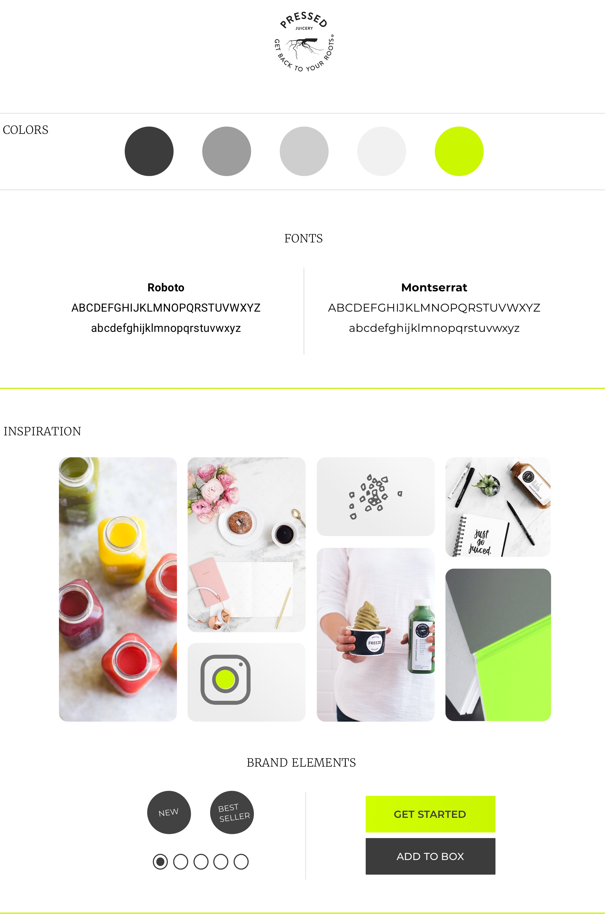
My thoughts for the project
A brand-new look and feel is fun to build, but the real value is in the experience users have navigating the site — presenting products clearly, with strong organization and visual clarity as the top priority. The site should give users a sense of wellness and nutrition at ease, inspiring them to invest in health and feel comfortable doing it.
Features / add-ons
"New" and "Bestseller" tags on product images — exciting for returning customers, reassuring for new ones.
Artwork that blends with the design without pulling attention away from the products.
Integrated Instagram content showing real customers and their love for the product.
Updated imagery that matches the redesign for real impact.
Reviews placed right under product details, for buying confidence.
Zip code verification alongside email, to confirm delivery area upfront.
A gift option — because what's better than gifting Pressed Juicery to the health junkies in your life.
A fully responsive site.
Artwork
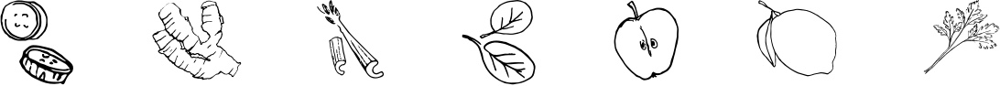
Building on the pencil-sketch ingredient illustrations already used on the site, a few more were added that bring just enough interest to the design while doubling as functional content dividers. After some trial and error — inspired by the product and its ingredients — the direction narrowed to three designs subtle enough not to compete with the content, because content is king.
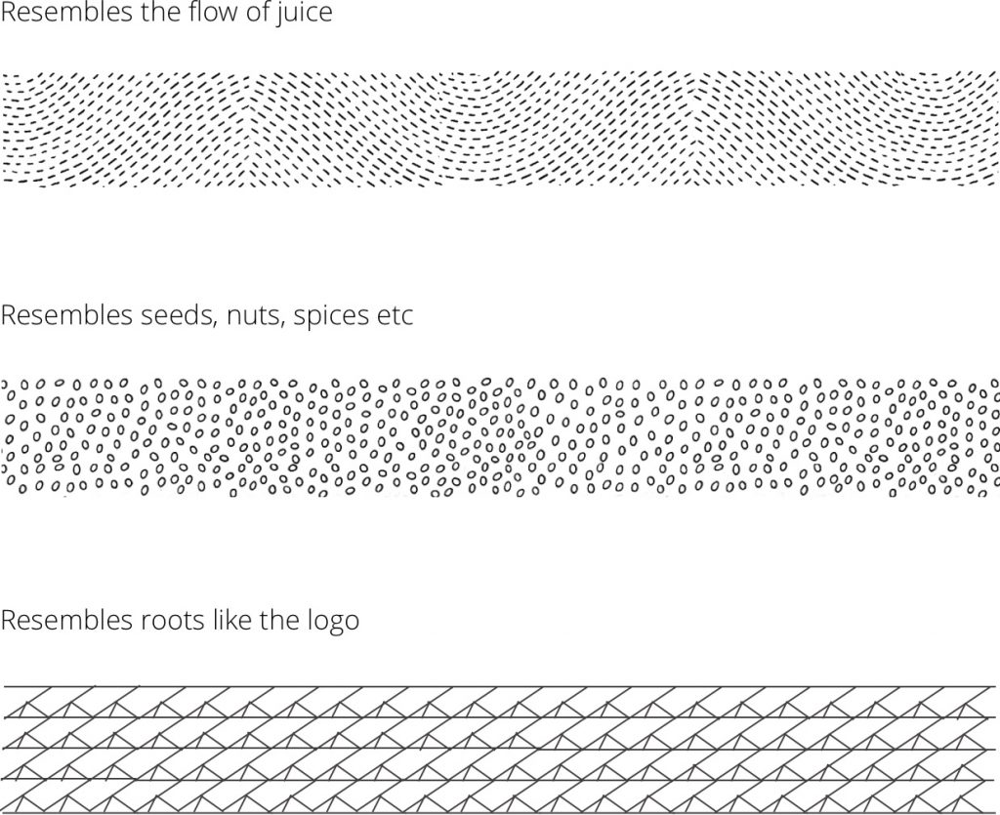
Navigation bar and menu makeover
Most menu items compressed into a single "Browse" dropdown covering Products, Cleanse, Bundles, Plans, and Membership. A "Who We Are" section was added, split into Our Story, Mission, Locations, Ingredients, and Reviews — and a "Gift" option joined the nav, since gifting a box of cold-pressed juice is an easy sell to health-conscious people. Login, Help, and a "Get Started" CTA sit to the right, giving anyone a clear starting point wherever they land. The nav is the core of how a site functions, so a thoughtful, user-first makeover here mattered for the whole experience.
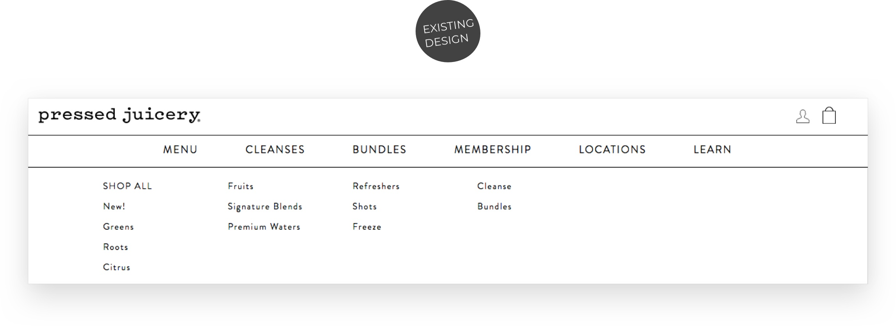
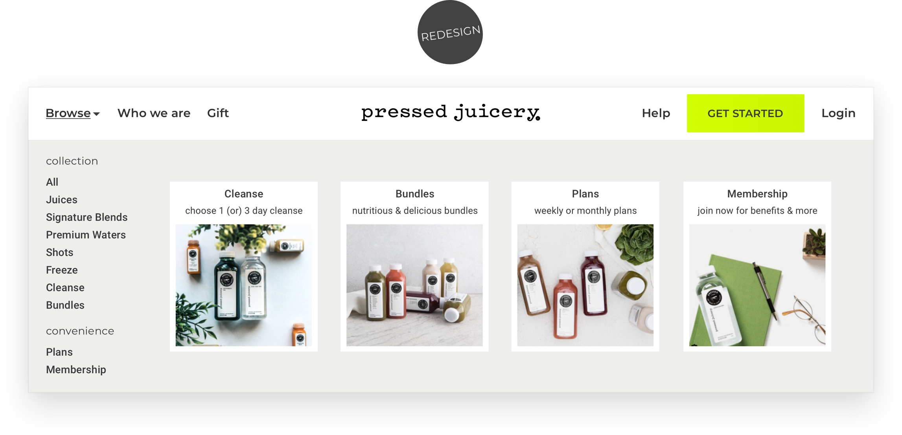
Navigation / flow — homepage
Pressed Juicery is a linearly flowing site: banner, then nutrition information, Top Picks, Pick a Plan, Booster Shots, and finally #Superblends, integrated with Instagram.
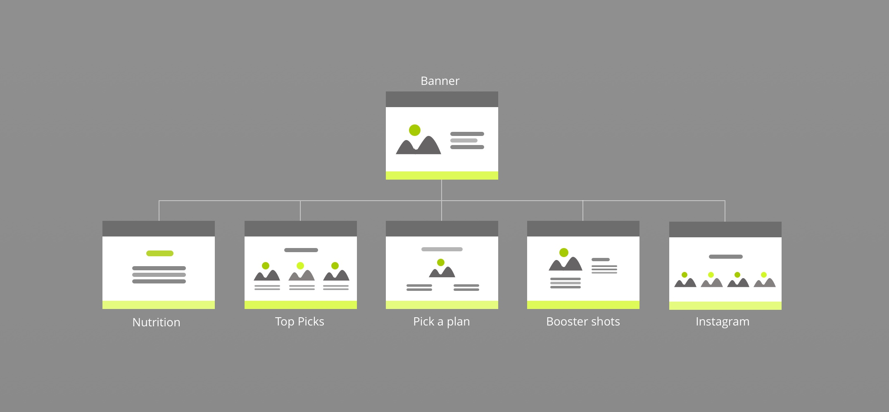
Current website screenshots
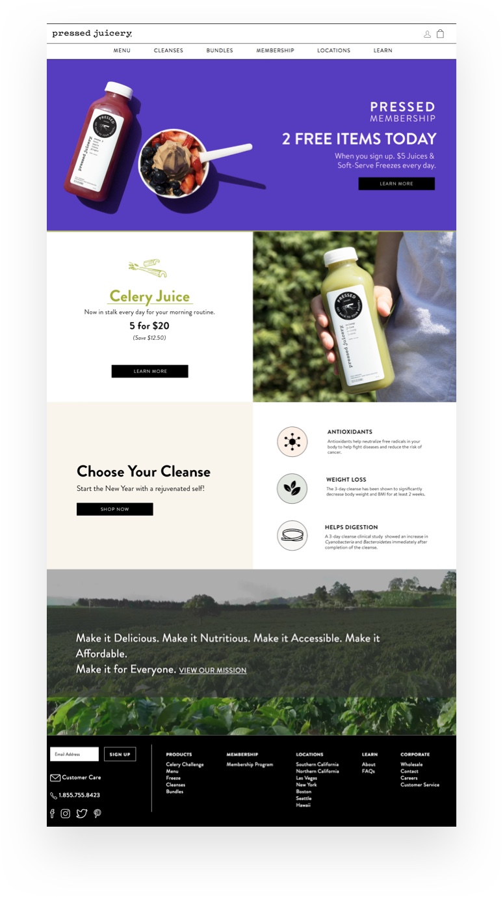
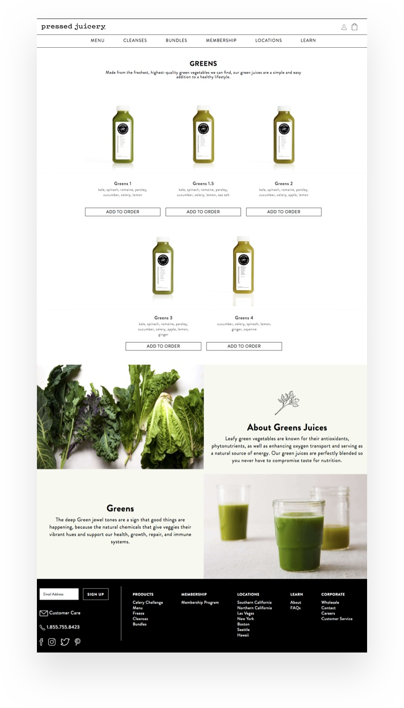
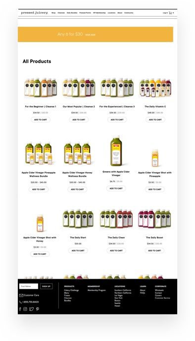
Home page makeover
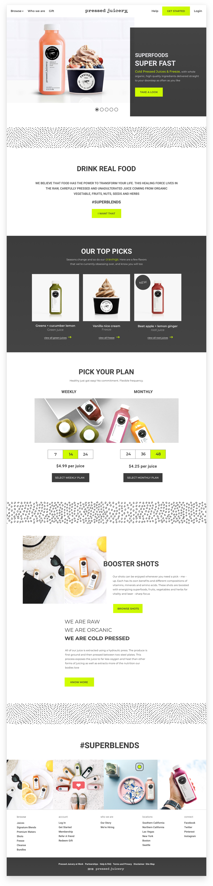
Challenges
Keeping artwork minimal enough to blend in — solved by giving it a functional purpose as content dividers rather than decoration for its own sake.
Balancing a redesign against not losing what already worked — segregating what was working from what wasn't and keeping that distinction clear throughout kept new features from crowding out the good bones of the existing site.
Staying focused on the broader user base rather than personal taste — a real challenge, given a genuine love for cold-pressed juice. Every project reinforces that the best solution comes from a wider perspective and empathy for the people actually using it.
Getting started / zip code verification
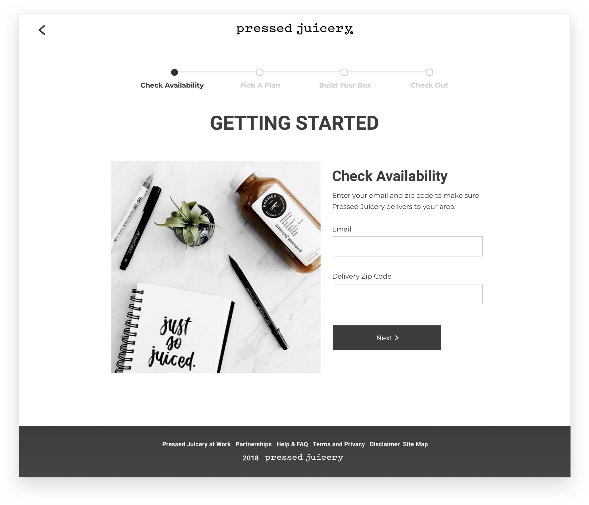
Picking a plan for delivery
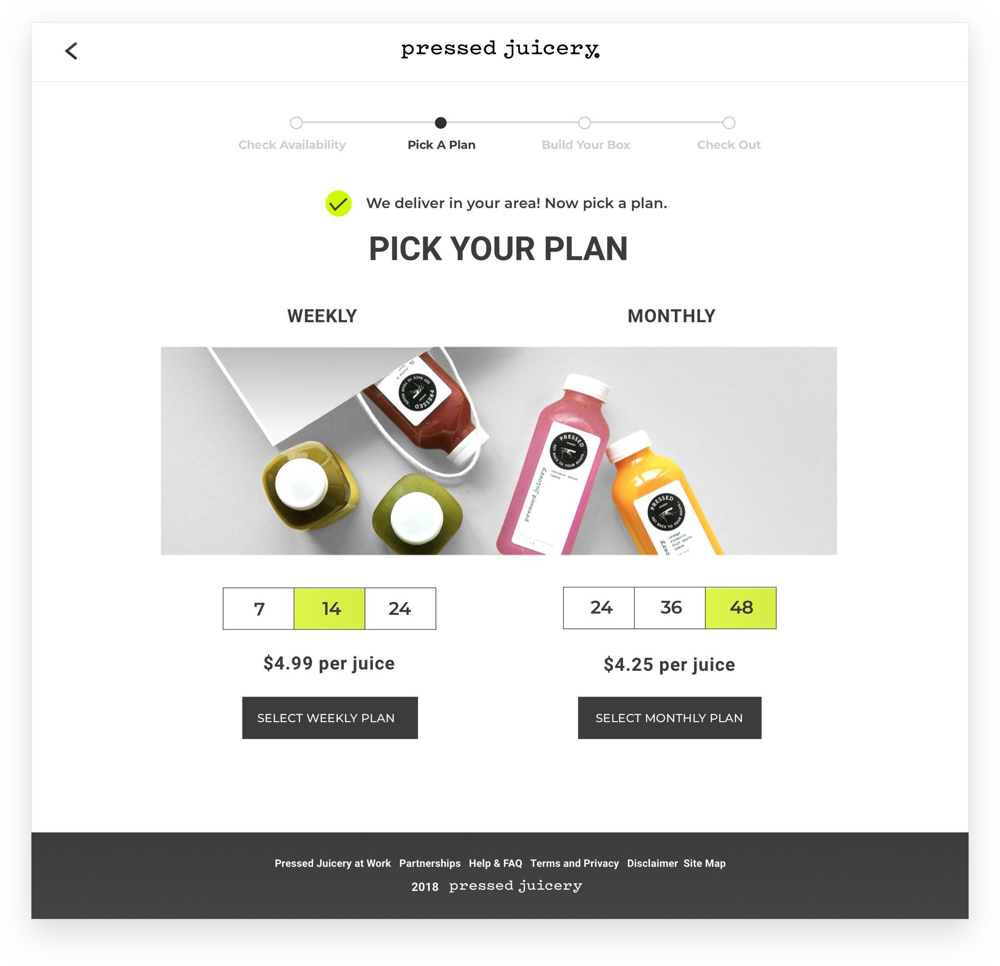
Building a box for shipping
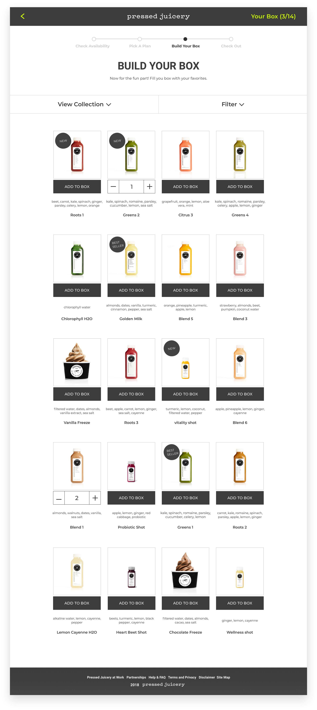
Product description page
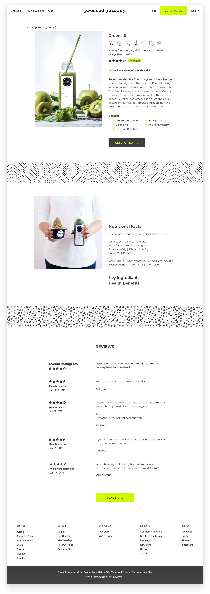
About Pressed Juicery page
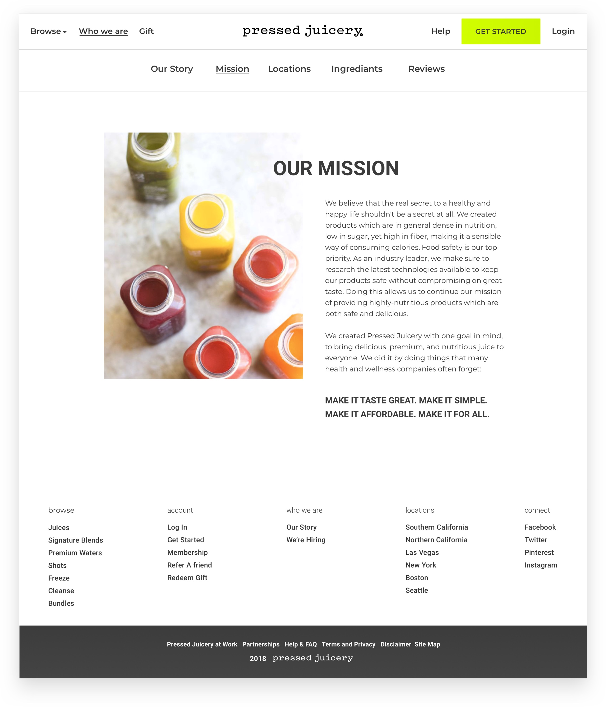
Responsive design
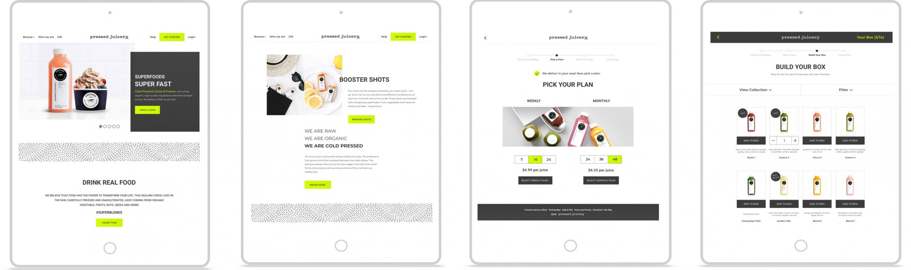
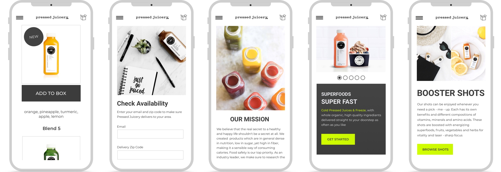
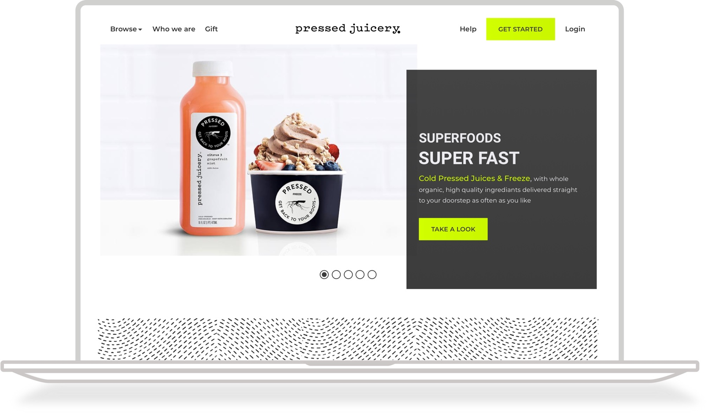
Conclusion
Rebranding and redesigning this site wasn't only about making it look better or more current — it was about illustrating Pressed Juicery's own philosophy: that meeting your nutrition goals with ease is genuinely possible. The project underscored the power of redesign and the impact a fresh experience can have on a business, and the value of keeping the user's and the business's best interests in mind through every stage of research, planning, and design.
Throughout, the goal was to show that simple upgrades can meaningfully shift how a product feels to use — the value of user-centered design and how it changes the way people perceive a company. It's second nature for designers to spot something outdated and immediately imagine how great it could be — this makeover was exactly that kind of project, and every bit of it was enjoyable.